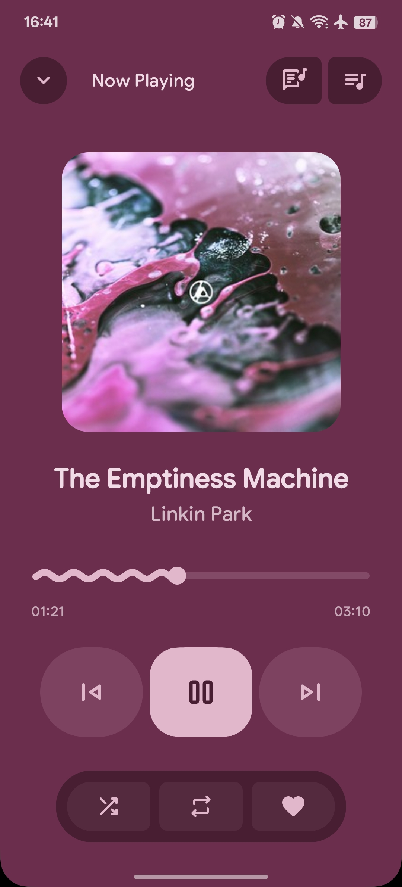
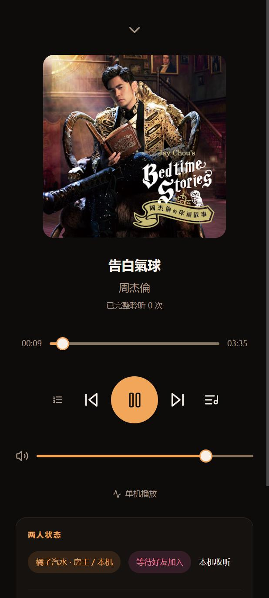
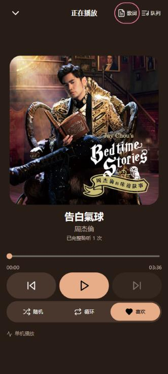
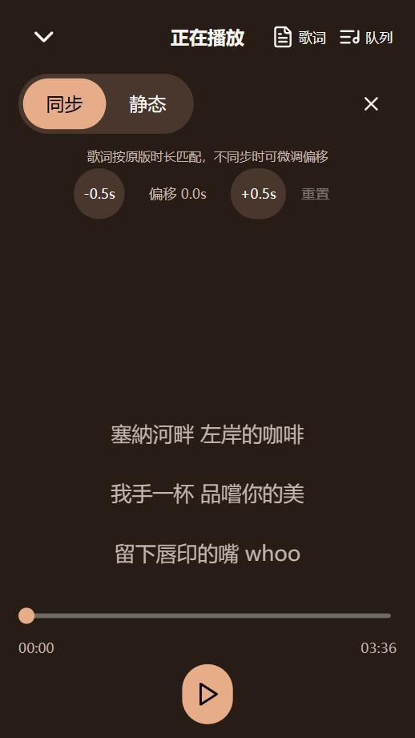
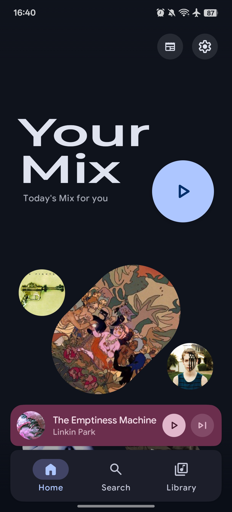
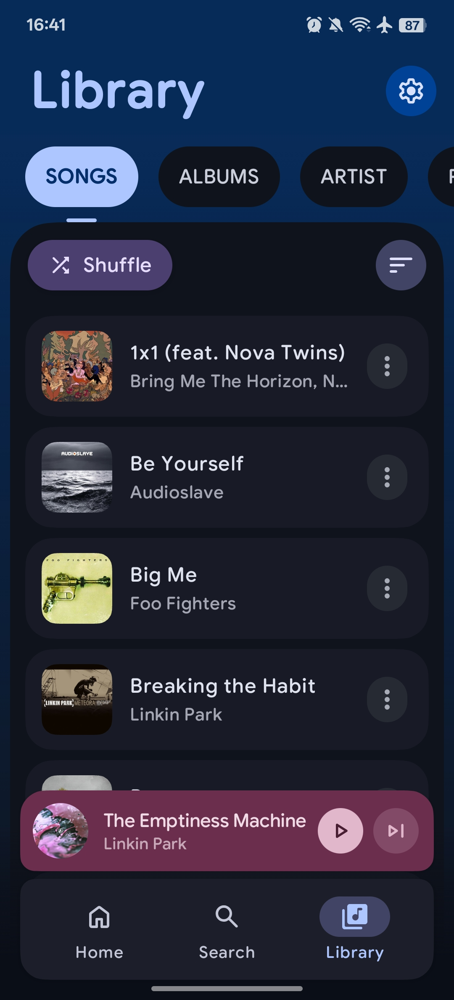
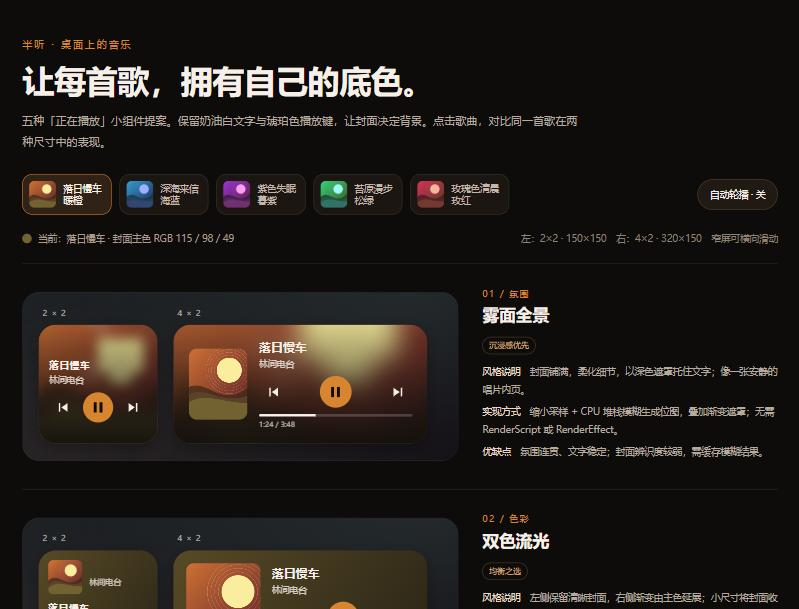

PixelPlayer × Half&Half 截图对比
左列：PixelPlayer（仓库 README 截图）。右列：Half&Half 当前版本（本地 dashboard.html，412×915 深色）。详细分析见 ../pixelplayer-comparison.md。
1. 正在播放页

PixelPlayer ：整页背景取自封面色板（primaryContainer）；封面占满宽度、18dp 圆角；标题/艺人字号差明显；波浪进度条、时间在轨道下方；前曲/播放/后曲三大胶囊；底部 shuffle/repeat/favorite 三段胶囊；顶栏有 Now Playing 标题、收起、歌词、队列。
Half&Half ：固定暖黑背景，不随封面变色；封面 340px 上限、16px 圆角；标题下还有“已完整聆听 N 次”；时间与直线进度同一行；模式/前曲/播放/后曲/歌单五个控件一排，只有中央填色；音量条常驻；下方紧接“两人状态”与“接下来”卡片，需要滚动。
共同点：方形封面居中、歌名+艺人、进度、前后曲与播放暂停、下拉收起。
主要差异：封面色板背景、控件分层（主控制三键 vs 五键一排）、进度条形态、顶栏信息。
1b. 改造后（2026-11-05，本地未提交版本）

正在播放（412×915） ：封面取色背景、28px 圆角封面、可见顶栏（收起 / 正在播放 / 歌词 / 队列）、时间在轨道下方的波浪进度、三大胶囊主控制、随机 / 循环 / 喜欢 胶囊组、单行双人状态、音量与次数收进“详情”。短屏（360×640） ：封面按高度预算缩小，主控制仍在首屏。

歌词页 ：同步 / 静态切换，当前行加粗高亮并居中，点行可跳转；来源 LRCLIB，经 music-service 代理与本地缓存。队列抽屉 ：接下来列表、替换播放歌单（房主）、两人状态卡从首屏移入这里。
歌单页 ：“我喜欢的音乐”固定第一位、爱心封面；“默认曲库”概念已移除（图中残留的空“默认曲库”已在后续轮次改为自动删除）。
2. 首页 / 发现

PixelPlayer ：超大标题、圆形主播放键、封面拼贴；mini player 为封面色胶囊；底部三 tab 大圆角浮动栏。Half&Half ：Eyebrow + 标题卡片、搜索框、来源筛选、推荐横滑；底部四 tab 贴底栏。整体更偏信息密集的工具型布局。
3. 曲库列表 + mini player

PixelPlayer ：胶囊分段 tab、每行独立圆角卡片、封面 16dp 圆角、大字号；mini player 随封面变色并有两个圆按钮。Half&Half ：列表行更紧凑、当前播放行高亮；mini player 为固定色条，封面小方图 + 暂停/下一首。
4. 桌面小组件
PixelPlayer （无 README 截图，按源码归纳）：4×1 bar、4×2 control、2×2 grid 三种专用版式；容器 28dp 圆角、16dp 内边距；背景、文字、按钮全部来自封面色板的日/夜配对；2×2 不显示歌名，改为四格大触控。源码里有波浪进度位图函数，但三种版式目前没有调用。
Half&Half ：已上线 4×2 与 2×2 两种 RemoteViews 小组件，背景已按封面主色做深色渐变；文字与琥珀播放键仍是固定色；2×2 控制行 124dp 预算与 110dp 最小宽度冲突。图为 docs/widget-style-options.html 的风格提案页，不是真机截图。